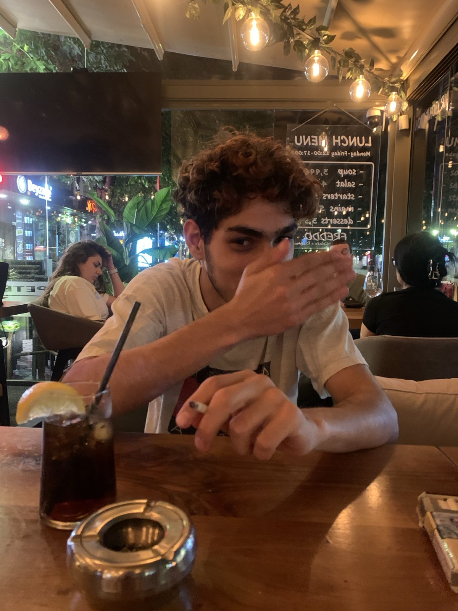

Memories
What I choose to remember.
Not evidence. Not arguments. Just moments that were real and beautiful while they were ours.
10.06.2026The first photo you ever took of me… such an ordinary moment, and yet today it is one of those memories I would like to hold on to forever.

04.07.2026There was something so peaceful about watching you sleep… as if, for a little while, the whole world went quiet, and simply having you beside me was enough.

22.07.2026 · 01:30An hour and a half after midnight. You were officially an adult, holding your first cocktail as one…

22.07.2026 · 01:30…and I had the best seat in the world — right across from your smile.

11.07.2026Back then, I didn’t know this would be the last photo you would take of me. I was smiling toward the sun, never imagining that one day I would look at this picture and miss not only that moment… but the person behind the camera.